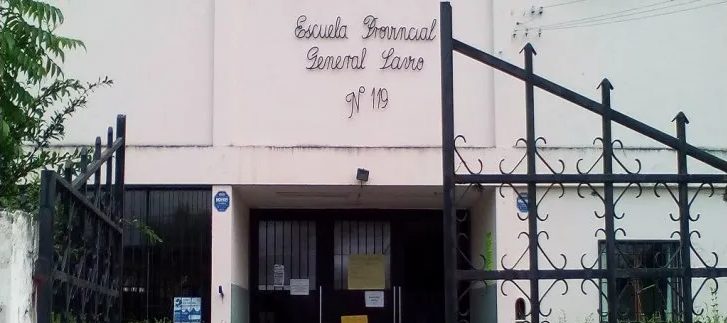

<main>
  <div class="container">
    <div class="row">
      <div id="carouselExampleInterval" class="carousel slide" data-bs-ride="carousel">
        <div class="carousel-inner">
          <div class="carousel-item active justify-content-center" data-bs-interval="3000">
            
            <div class="carousel-caption d-block" style="color: #d0b080;   text-shadow: 2px 2px 4px rgb(0, 0, 0);">
              <h1>Escuela Primaria N° 119</h1>
              <h4>General Manuel Savio de Palpala - Jujuy</h4>
            </div>
            
          </div>
          <div class="carousel-item box2">
            <div class="carousel-caption d-block justify-content-center text-center">
              <h1>Sistema diseñado Exclusivamente</h1>
              <p>Este sistema esta diseñado para la Escuela Primaria N°119</p>
            </div>
          </div>
          <!-- 
            <div class="carousel-item box3">
            <div class="carousel-caption d-none d-md-block">
              <h5>A</h5>
              <p>Some representative placeholder content for the third slide.</p>
            </div>
          </div>
          -->
          
        </div>

        <button class="carousel-control-prev" type="button" data-bs-target="#carouselExampleInterval"
          data-bs-slide="prev">
          <span class="carousel-control-prev-icon" aria-hidden="true"></span>
          <span class="visually-hidden">Previous</span>
        </button>
        <button class="carousel-control-next" type="button" data-bs-target="#carouselExampleInterval"
          data-bs-slide="next">
          <span class="carousel-control-next-icon" aria-hidden="true"></span>
          <span class="visually-hidden">Next</span>
        </button>
      </div>

    </div>
  </div>
</main>